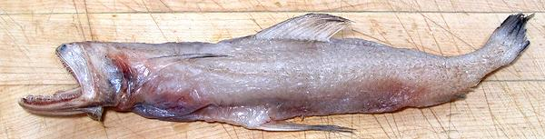
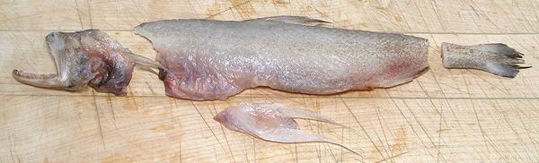
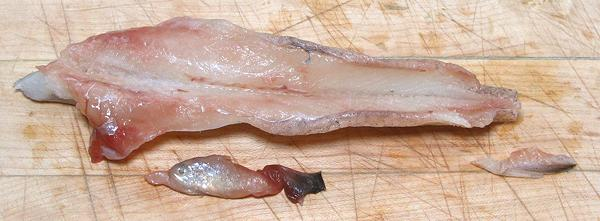
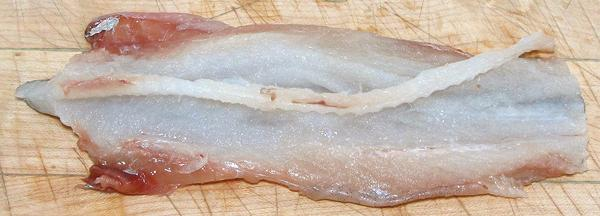
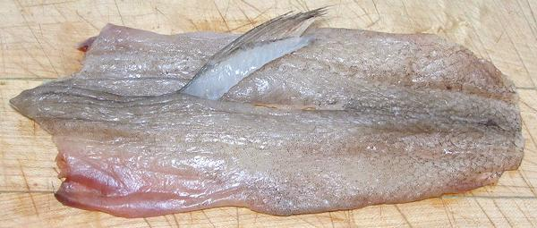
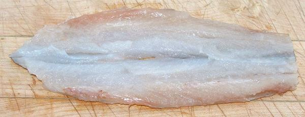

Whole Bumalo Fish as purchased.

First trim: Head, Tail, and Pelvic Fins

Gutted and cut down to the badckbone,
anal fin removed.
This fish's lunch is clearly visable (swallowed head first).

Backbone cut loose

Dorsal Fin Removed

Fillet trimmed and excess water wrung out.